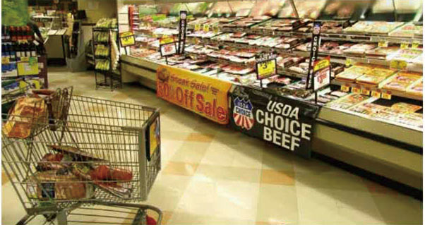

商家加盟好处
亲爱的商家！欢迎加入同好宝。您的营业额将快速提增，因为您拥有了同好宝平台的用户与会员，他们将成为您的固定客户。
尊敬的阁下：您好！
感谢您百忙中阅读此信，希望您加盟《同好宝消费联盟团购网》使您的事业更加红红火火！ 现在商业竞争异常激烈，特别是同行业。如何在激烈的竞争中，更胜一筹，增加客人量提高收益呢？ 一个神奇的方法，与一个新的支付模式，马上使您的营业额提30%甚至更多。有人会不信，也有人认为是个机会，立即就行动。越来越多的统计显示：在这个世界上有10%的人掌握了世界上90%的财富，这绝非偶然！他们善于抓住机会、透过行动使他们的财富倍增，其实你也可以成功。商业环境激烈竞争的今天，尤其互联网时代，我们都要思考一个问题：如何快速提升“营业额”?是什么制约生意难做？其实是一个人的思维观念，另一个就是方法模式。很多商家用了很多方法达不到预期效果。现在有一种方式：既不增加成本的投入，又能快速提升营业额，使客户成为固定会员，而且会越来越多的会员。而你只要加盟就可以实现了，用最少的力气，花最少的时间，创造最多的利润，完成更高的目标，享受生活。同好宝“神奇的方法”是消费等于开店，消费100返100最终实现消费就是工作。1积分相当于1元钱，凭积分返回变现的终极促销模式。简单说就是您卖商品，我返钱。同好宝消费多少送多少，消费相当不花钱消费。
想想看：不花钱消费，想都不敢想，但是，就在你看这封信的时候，它每天都在发生，而且该模式已经使很多商家营业额大幅提升，真的能做到么? 如果你在店门口挂一条横幅，上面写着：“来这里消费5折优惠”时间：效果会怎么样呢?收效甚微。那么从某月某日起，您挂另一个横幅：“来这里消费多少送多少。送的就是现金，可以变现的现金。哪一个更吸引人，不用说肯定是第二个。人为利很正常，该模式可使您快速提升人气，营业额提升也是很自然的事情。模式使商家的促销做到了极致，消费者对新事物消费模式也会产生好奇，最重要是真实惠。反正要消费的，无非是选择在你这里消费而已。这就是同好宝的消费联盟团购网，提升营业额的神奇促销模式。 →敬爱的商家，做不做在您，我们在每一个行业都会加盟一家商家，希望我们成为朋友，不是协助对手成为竞争，而是希望您与同好宝一起共同面对市场竞争，让我们一起采用支付新方式，消费新主张，共享新经济，拥有新财富的商家消费联盟模式，真诚至心地欢迎您加盟我们！

增加客流量：
增加客人，增加收益，同行业类别只加盟一家，增加竞争力影响力，加盟后随着会员增多，生意一天比一天好。不需要任何其他费用。快速凝聚大量的消费群体，吸引更多的消费者到商家去消费。增加钱收益：
推荐到店消费客人使用同好宝支付，奖励6%，让消费者成为常客，因为消费者好处很多和多种消费方式详见海报参考。到店里消费的人成为商家与同好宝会员时，这个客人必定会消费而且马上变成了商家固定客户。从新客到常客老客一步转换到位，相当于每个消费者到自己家消费。通过员工，客人，亲戚朋友，同学等，整合形成资源带动广泛消费而财富。消费体验链：
现在消费不仅仅追求环境好，服务好，东西好，更需要体感性，比如一块钱在地上，很多人不会去拣，但手机红包几角甚至几分也会去抢，其意义就是体感性，同好宝互联网团购网让每一个消费者体验感快乐，体验消费价值。时时刻刻可消费，分分秒秒有收益，同好宝是新支付方式趋势。广告省开支：
现在开店租金高，人员，促销等费用支出多，利润低，品牌信任度不强，单一依靠熟人和人情开店不是未来发展，同好宝让来消费过的客人，成为老客，常客，而且带来新客，成为您固定客户还会为您作义务推广，同好宝消费支付方式推广，让商家省却若干费用，这就是同好宝大家好！线上和线下：
为商家免费线上开店，形成实体店与网络店结合，随着高速发展，交通便捷，亲戚朋友走动与异地流动广泛而频繁，对一个熟悉的亲戚朋友同学走动对环境来说也是新的，大多会通过利用互联网信息工貝。使用美团/百度/淘宝/同好宝/微信/地图等方便的常见工具。同好宝结合了功能让客户自动上门也可到网上消费。享受店中店：
同好宝是一款专为商家定制的消费联盟互联网使用平台，实行跨界消费互利消费，结合实体店与网络店中店，加盟后可以选择店中店，享受同级别其他店的消费利益。商家加盟选择什么档位的店，等于在网络中也开了店，网络店大小可自由选择，选好享受以后加入同级别店的所有消费返利，还可拿新增会员与新增加盟商家10%分红。提高竞争力：
现在商家开店容易守店难，同行业竞争激烈，我们同行业只加盟一家，为您增加竞争力，把更多客户吸引到您这里来消费，因为我们有庞大的会员体系。加盟的理由：
加盟商家只有好处，没有一丝坏处，无须加盟费，没有任何风险，由于互联网趋势发展淘宝美团出现，好多消费摸式改变了，墨规守店生意更难做，我们采取互联网团购网优势为商家线下实体有店线上也有店，让更多消费者知道并找到您的店铺消费。这些客户消费自动生成团购网建立永久性客户群体。所以会员只会到你这里消费也会自动上门或通过网络店中店消费。消费联盟链：
商家加盟后，第一个月共同宣导，第二个月传播促销，第三个月增加客流量。第四个月营业额上升比以前多收益。第五个月快速增长并带来新消费联盟群体。六个月彰显互联网线上线下优势，竞争对手感觉压力，逐步退出，改变了恶性竞争环境，赢得行业规范和合理利润。商家多增益：
商家推荐每一个会员，公司都会奖励百分之三十。这样商家可以利用优势再创价值，提高收益同时给自己和员工额外收益，使员工更好为商家客人用心服务。信息畅通快人一步，别人缺乏竞争方法，而加盟的商家多了竞争优势，更胜一筹，现在商家赚钱离不开消费者，同好宝消费联盟让商家消费者共享新经济。可以兼职推广增加店和员工额外收益，使人员更稳定努力工作。在原来基础上增多1%收入，还使原来客人变成固定消费会员。你开店发展消费者就是种果树做功德，即得果实也给别人剩凉。别人也同样如此。这个道理很简单其实成就别人也成功了自己。